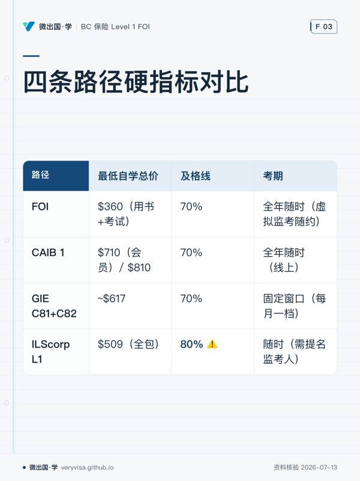

核实日期：2026-07-13｜来源：Insurance Council of BC / IIC / IBABC / ILScorp 官网原文 复核周期：每 90 天（下次 2026-10-11）。费用与考期会变，引用前先看这里，不要重新联网。
0. 先搞清楚制度：这是两段式，不是一段式
很多人（包括本项目原来的设计）把"考试"和"拿牌"混为一谈。实际是：
第一步：教育资格（Education Prerequisite）
↓ 四选一，通过其中任一即满足
FOI | CAIB 1 | GIE C81+C82 | ILScorp L1（等效认可）
↓
第二步：Insurance Council Rules Course（Council 官方课，所有申请人必修）
↓
第三步：被持牌代理机构雇佣/担保（sponsorship）
↓
第四步：向 Insurance Council of BC 递交 Level 1 Salesperson 牌照申请
三个致命时限（写进 memories，别踩）：
- 考试成绩仅 1 年有效。过期必须重考。→ 不要"先考完慢慢找工作"。
- 牌照申请须在通过考试后 12 个月内递交。
- 必须有雇主 sponsorship 才能申请牌照。没工作 = 考了也拿不到牌。
Level 1 牌照本身的限制： 必须在持牌 agent 监督下工作；只能在代理机构场所内展业（除非已完成 Council Rules Course）；不能签发保单；年收入至少 60% 须为工资（非佣金）。
1. 四条路径硬指标对比
| FOI（IBABC） | CAIB 1（IBABC） | GIE C81+C82（IIC/IIBC） | ILScorp L1（等效认可） | |
|---|---|---|---|---|
| 用书费 | $165 | 会员 $315 / 非会员 $415 | 资源包 $247（含纸质+电子+在线资料） | 含在套餐内 |
| 考试费 | $195 | $395 | $315/科（C81、C82 各一次；BC 持牌走单张执照考试） | 含在套餐内 |
| 课程费（可选） | 会员 $594 / 非会员 $694 | $584（会员非会员同价） | 独立自学包 $847（早鸟 $792，含用书+学费+考试） | — |
| 最低自学总价 | $360（用书+考试） | $710（会员）/ $810 | ~$617（$55 报名 + $247 用书 + $315 考试）※ | $509（全包） |
| 考试形式 | 100 题单选 | 单选 + 名词解释 + 简答 | 100 题单选，闭卷 | 200 题判断（T/F） |
| 时长 | 2.5 小时 | — | 2 小时 | 3 小时 |
| 及格线 | 70% | 70% | 70% | 80% ⚠️ |
| 考期 | 全年随时（虚拟监考随约） | 全年随时（线上） | 固定窗口（每月一档，见 03 文件） | 随时（需提名监考人） |
| 重考费 | $195 | — | $315 | $150 |
| 重考等待期 | 第 2 次可立即重考；第 3 次起须等 1 个月 | — | — | — |
| 用书版本 | 2017 版 ⚠️ + Autoplan 增补 2024/4 | 新版（2027/1/1 起只认新版）⚠️ | 2025 版 C81/C82 + 2022 BC Auto 增补 | 12 章，声称 forms & coverages 保持更新 |
| 计入更高设计（designation） | ❌ 不计入 | ✅ 计入 CAIB | ✅ 可衔接 CIP（C130/C131 升 Level 2/3） | ❌ |
| 自带题库 | 无（有 IBAS 免费 90 题练习卷） | 备考资源 $49/$99（12 周） | 预录讲座包 $100（6 个月） | 650 题工作簿 + 300 闪卡 + 2 套模拟 + 终考 |
※ GIE 单科费用相加是理论值；BC Level 1 走 IIBC 的"单张执照考试"，实操上更常见的是直接买 $847 自学包。报名前打 778-328-3456 跟 IIBC 确认"只买用书 + 只写 Level 1 licensing exam"的确切价格。 这是本表唯一没有 100% 官网明示的数字。
2. 客观分析：每条路的真实取舍
FOI —— 便宜、灵活，但用书老
- ✅ $360 全包，全场最低（自学）；考期完全自由，随时约虚拟监考；第一次不过可立即重考。
- ✅ 考纲明确含 ICBC Autoplan，且 Autoplan 增补是 2024 年 4 月版——BC 车险这块是最新的。
- ❌ 主用书停留在 2017 年版。9 年没换版，通用保险原理（合同法、火险法定条款、财产险）变化不大，但"行业与监管"部分可能滞后。
- ❌ 不计入 CAIB/CIP 任何设计。~~将来升 Level 2 要重新从 CAIB 1 开始~~ [更正 2026-07-23] 牌照升级与此无关:BC Level 2 只要求 CAIB 2+3(Level 3 要 CAIB 4),FOI 出身不必重读 CAIB 1(见 §5 与 kb/05 升级映射);FOI 放弃的只是 CAIB designation 头衔(需全 4 科)的第一科学分。
- ⚠️ 会员价 $594 只对"在 IBABC 会员经纪行任职"的人开放——你目前没工作，拿不到。
CAIB 1 —— 贵，且 2026 年底有版本悬崖
- ✅ 唯一计入 CAIB 设计的入门课，长期走经纪路线最省事。
- ❌ ~~自学总价 $810~~ [更正 2026-07-15/07-23] New Edition 已改用书+考试捆绑不可拆:新人自学数字版 $850 起(纸质 $950/全套 $1,100),现行价以 kb/05 CAIB New Edition 节为准。
- ❌ 考试有简答题——对非母语考生是明确的额外风险（FOI/GIE/ILS 全是客观题）。
- ❌ 版本悬崖：2027 年 1 月 1 日起只认新版 CAIB 1，旧版须在 2026-12-31 前考完。你的目标是 2026 年 12 月前 —— 正好卡在悬崖边，一旦延期就作废。这条路的时间风险最高。
GIE C81+C82（IIC/IIBC）—— 用书最新，但考期不自由
- ✅ 用书最新（2025 版），内容质量与行业认可度最高；可无缝衔接 CIP → Level 2/3。
- ✅ IIBC 官网公开发布了完整考纲权重（见
02-exam-blueprint.md）——这是四条路里唯一把"考什么、占多少分"讲清楚的，对 AI 辅助备考的价值极大。 - ❌ 贵（$847 自学包）；考期是固定窗口，错过要等下个月。
- ❌ 自学包有 4 个月完成期限。
- ⚠️ BC Auto 增补仍是 2022 版，比 FOI 的 2024 版旧。
ILScorp L1 —— 题海最强，但及格线 80%
- ✅ $509 全包：视频课 + 纸质用书 + 650 题工作簿 + 300 张闪卡 + 2 套模拟 + 终考。练习资源是四条路里唯一充足的。
- ✅ 对"AI 辅助刷题 + 间隔重复"这套打法，题库本身就是最好的燃料。
- ❌ 及格线 80%（其它三条都是 70%），容错空间小 10 个百分点。
- ❌ 考试是 200 题判断题——判断题对细节记忆的要求比单选更苛刻，且"半懂"就会被扣分。
- ⚠️ 是"等效认可（equivalency）"路径，不是正表四选一。2026-07-13 已核实：Council 官网 Level 1 教育选项页面明确列出 ILScorp 等效路径，当前有效（且同时被认可用于 Level 2/3 的教育前提）。若临近报名想再稳一层，可邮件 licensing@insurancecouncilofbc.com 留书面记录，但这不是阻塞项。
- ❌ 只有 3 个月访问期。
3. 推荐（有理由的，不是拍脑袋）
首选：FOI（IBABC），自学，$360
理由，按权重排序：
- 你的目标是"2026 年 12 月前拿到 Level 1 上岗"，不是"拿设计"。 在这个目标函数下，CAIB 1 的设计价值兑现不了（你还没工作，Level 2 要 2 年后才谈），却要多付 $450 并承担简答题 + 版本悬崖两个风险。
- 考期自由是最大的隐性价值。 你正在 AI 辅助自学，进度是不确定的。FOI 让你"准备好了就考"，GIE 让你"到了窗口才能考"。学得快能提前，学得慢不用等一个月——这对单人自学的价值远超省下的几百块。
- 70% 及格线 + 全单选 + 第二次可立即重考 = 四条路里通过风险最低的组合。ILScorp 的 80% + 200 判断题是明显更硬的门槛。
- $360 vs $509 vs $810 ——省下的钱正好够你买 ILScorp 的题库当补充（如果需要）。
- 用书 2017 版的短板，恰好是这个 AI 项目能补的：把"用书（打底）+ 官方现行法规原文（Council Rules / Code of Conduct）+ ICBC 2026 现行数字"三层叠起来，用 Claude 做交叉核对，比死背旧用书强。这是本项目存在的核心理由。
组合建议（$360 + 可选 $509）
如果预算允许，FOI 用书+考试（$360）作为持牌主线，另买 ILScorp L1（$509）纯当题库和视频课（不用它的考试）。总共 $869，你得到： - 一条低风险、灵活考期的持牌路径； - 950+ 道练习题 + 视频课 + 闪卡，喂给 Claude 做错题追踪和间隔重复。
但先别买 ILScorp。 先花 2 周把 FOI 用书 + IBAS 免费 90 题练习卷跑一遍，测出真实弱项后再决定是否补题库。别一开始就堆资源。
什么情况下推翻这个推荐
- 你已经确定要长期做经纪并很快升 Level 2 → 直接 CAIB 1（但必须 2026 年内考完旧版，或直接报新版）。
- 你打算走 CIP 设计 / 进保险公司而非经纪行 → GIE C81+C82（用书最新，衔接 CIP）。
- 你极度擅长题海、且时间紧 → ILScorp（80% 及格线的代价换全套题库）。
4. 立即行动清单（FOI 路线）
- [ ] 下载 FOI Registration / Textbook Order Form 2026.01，邮件订用书（$165，售出不退）
- [ ] 免费先做：IBAS FOI 练习卷 90 题 + 答案 —— 拿到用书前就能测基线
- [ ] 用书到手后开始 Phase 1（见
02-exam-blueprint.md） - [ ] 模考稳定 ≥80% 后再付 $195 报考（考试费自购买起 1 年有效，6 个月后不退）
- [ ] 监考选 IBABC 虚拟监考（无需雇主邮箱；注意"提名监考人"路线要求企业邮箱，你没工作用不了）
- [ ] 并行：注册 Insurance Council Rules Course（拿牌必修，可提前做）
- [ ] 并行：开始找 sponsorship 雇主（这是拿牌的硬卡点，不是考完再想的事）
5. 从"找工作/含金量"角度复核（补充核实，2026-07-15）
用户质疑：FOI 用书是 2017 版，担心用人机构不重视。以下是专门针对"找工作、含金量、发展前景"重新联网核实的结论，覆盖第 3 节的推荐但结论不变（补充了理由和后续动作）。
官方原话：CAIB 的含金量指的是"完整设计"，不是"Level 1 用哪条路径考"
IBABC 官网 Licensing & Designations 页原文："Brokerages often choose candidates with a CAIB designation over those without, simply because they know CAIB graduates are more versatile and capable." 但这句话说的是拿到完整 CAIB designation（CAIB1+2+3+4 全通过）的人，不是"Level 1 选了 CAIB1 而不是 FOI"的人。
BC 的关键结构性事实：Level 2/3 不管你 Level 1 怎么考的，都要另外考 CAIB2/3/4
BC 升 Level 2 硬性要求 CAIB 2 + CAIB 3，升 Level 3 硬性要求 CAIB 4——这条路无论你 Level 1 是用 FOI、CAIB1 还是 GIE 考的，都逃不掉。 FOI/CAIB1 只影响"Level 1 这一关怎么过"，不影响后面的路。也就是说，就算现在选 CAIB1，也拿不到完整 designation（还差 2、3、4），"含金量"的差距被这条路径本身抹平了。
真实招聘信息：雇主看"有没有 Level 1 执照"，不挑"哪条路径考的"
抓取到的 Indeed/Glassdoor 招聘摘要显示，BC 经纪行对 Level 1 候选人的要求普遍是"持有 Level 1 执照"或"正在考/愿意考 Fundamentals、CAIB 或 CIP"，并常见"入职后资助你考 CAIB/CIP"的条款。CAIB/CIP 是雇主资助的进阶项，不是入职门槛。 没有证据支持"FOI 背景在招聘中被歧视"。
用书版本老 ≠ 监管知识过时
FOI 与 CAIB1 覆盖同一套核心知识（第三方 PNC Learning 原话与 IBABC 官方定位一致：FOI 范围略窄但"完全满足持牌要求"）。用书版本老，不代表考试内容或行业要求过时——两门考试考的都是现行监管框架，且本项目已经用"用书打底 + 现行法规原文 + ICBC 现行数字"三层交叉核对来补这个短板（见 kb/04）。
你的目标场景（经纪行/ICBC Autoplan）匹配 CAIB/CPIB，不匹配 GIE/CIP
GIE（IIC）路线更偏向衔接 CIP，CIP 官方定位是"面向经验丰富的保险从业者，尤其是想做 underwriter（核保）的人"，是技术/公司岗方向。你的目标是"进 BC 经纪行 / ICBC Autoplan 相关岗位"（客户面对面的经纪岗），这明确是 CAIB → CPIB 的赛道，进一步排除 GIE 作为更优选项。
结论：维持 FOI，但把"入职后补 CAIB2/3（视情况回补 CAIB1）"正式排进计划
- Level 1 入职阶段，FOI vs CAIB1 对"能不能找到工作"几乎没有差别——雇主看执照有没有，不看你走哪条路径。FOI 更快、更便宜、纯单选对非母语更友好，优先级仍是"尽快拿到 Level 1 + 尽快找到 sponsorship"。
- 真正决定含金量的是完整 CAIB designation，不是 Level 1 用哪门考的。 这通常是入职 1-2 年后、雇主出钱资助才做的事。现在为了省下的 $200 选 FOI，对你未来能不能拿到 CAIB designation 没有影响——因为不管现在选哪个，Level 2 时都要另外考 CAIB2+3。
- CAIB1 唯一的实质优势： 现在就能把"CAIB designation 四选一"提前打勾一个，省得以后回头补考（多花 $395）。代价是贵 $200、多一种简答/名词解释题型（对非母语者是明确的额外风险）、且不影响你 2026 年底前能不能找到工作。权衡下来仍然是 FOI 优先。
- 新增到位待办： 拿到 Level 1 上岗后，向雇主争取报销/资助 CAIB 2 + CAIB 3（Level 2 硬性要求），并评估是否值得回头补考 CAIB 1（凑齐完整 CAIB designation，提升长期含金量与顶格薪资）。这条动作已写入
memories/decisions.md（2026-07-15 决策）。
Sources（核实于 2026-07-13）
- Insurance Council of BC — Individual General Insurance Licence（四条教育路径、1 年有效期、sponsorship、Council Rules Course 必修、CAIB 版本悬崖）
- IBABC — FOI 考试与用书说明（$165 用书 / $195 考试 / 100 题 2.5h 70% / 重考规则 / 监考选项）
- IBABC — Two Paths to Licensing (FOI vs CAIB 1)（CAIB 1 费用、考试形式、CE 学分）
- IIC — BC Broker/Agent Level 1（GIE 路径、2025 版用书、单张执照考试）
- IIC — GIE Fees（$55/$847/$792/$247/$315）
- IIC — BC Level 1 Licensing Exams（考纲权重、考期、100 题 2h 70%）
- ILScorp — Level 1 General Insurance Licensing（$509、200 题 T/F、80% 及格、650 题工作簿）
第 5 节补充 Sources（核实于 2026-07-15）
- IBABC — Licensing & Designations（官方原话："Brokerages often choose candidates with a CAIB designation..."；CAIB 是 Level 2/3 升级的推荐路径）
- Insurance Business Canada — Guide to insurance broker courses in Canada（BC Level 2 需 CAIB2+3、Level 3 需 CAIB4，与 Level 1 用哪条路径无关）
- Insurance Business Canada — How to become an insurance broker in BC（招聘与晋升路径、CAIB4 价值、BC 平均薪资）
- PNC Learning — CAIB 1 与 FOI 对比（第三方视角，两者核心知识相同，FOI 更快更便宜更适合入门）
- Indeed / Glassdoor BC 招聘信息搜索摘要（核实于 2026-07-15，样本为搜索引擎摘要，非逐条抓取原文，用于佐证"雇主看执照有无，不挑路径"这一结论方向，非精确统计）
本页知识卡
不看正文也能拿到这一节的核心内容：先看导读，再看图。点图放大，左右翻页。
- 先看沿箭头看考试之后还缺哪些拿牌环节。
- 易漏必须有雇主 sponsorship 才能申请牌照；没工作，考了也拿不到牌。
- 下一步去路线检查当前环节，再带申请时限问题找持牌专业人士。

- 先看先看最低自学总价，再横向核对及格线和考期。
- 易漏GIE 最低价是理论值；报名前要向 IIBC 确认确切价格。
- 下一步去讲义核对考试形式，再到模考按对应题型准备。